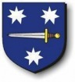

Blev ca 64 år.
omkring 1425.
1489.
Laurentius, biskop i Arezzo, beviljar lekmannen Sten Henriksson (Renhufvud) och hans hustru Anna Jakobsdotter (Kurki) från Åbo stift tillåtelse att fortsätta vara gifta och få sin avkomma betraktad som legitim. Sten och Anna ingick och fullbordade sitt äktenskap utan att veta att de är släkt i fjärde led.